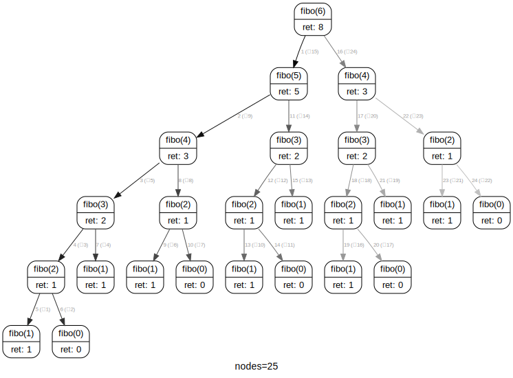

T4 1 TP Recursivite correction
| Thème 4 - Langage et Programmation |
|---|
| 03 | RECURSIVITE |
|---|
Programme Terminale
| Contenus | Capacités attendues | Commentaires |
|---|---|---|
| Récursivité | Ecrire un programme récursif. Analyser le fonctionnement d'un programme récursif. | Des exemples relevant de domaines variés sont à privilégier |
Première approche⚓︎

Faite l'essai
Principe⚓︎
En règle générale, un objet est dit récursif s'il se définit à partir de lui-même.
On trouve donc des acronymes récursifs, comme :
- GNU dans GNU/Linux (GNU is Not Unix),
- le logiciel d'émulation WINE (Wine Is Not an Emulator),
- les cartes bancaire VISA (Visa International Service Association),
- le moteur de recherche Bing (Bing is not Google),
- etc.
A retenir : Fonction récursive
Une fonction est dite récursive lorsqu'elle fait appel à elle-même dans sa propre définition.
Premiers exemples et précautions d'usage⚓︎
Note : No infinite recursion !
Voici trois premiers exemples de fonctions récursives. Dans chaque cas, repérer l'appel récursif à la fonction.
Une seule de ces 3 fonctions est correcte, laquelle?
-
Fonction 1
🐍 Script Pythondef f(n): print(n) f(n-1) print("Hello world!") -
Fonction 2
🐍 Script Pythondef f(n): if n == 0: print("Hello world!") else: print(n) f(n-1) -
Fonction 3
🐍 Script Pythondef f(n): if n == 0: print("Hello world!") else: print(n) f(n)
Cas de Base
Lorsqu'on écrit une fonction récursive, le piège classique est de créer une boucle infinie.
Hormis les blaques de geeks d'initiés, la récursivité en informatique ne tolère pas l'auto-référence infinie: il faut prévoir une condition d'arrêt qui traite le cas de base !!!

Ce «cas de base» sera aussi appelé «condition d'arrêt», puisque la très grande majorité des algorithmes récursifs peuvent être perçus comme des escaliers qu'on descend marche par marche, jusqu'au sol qui assure notre arrêt.
Terminaison
Pour s'assurer qu'une fonction récursive se termine, il faut absolument que la chaîne d'appel conduise au cas de base.
- si le paramètre de la fonction est un entier, alors l'appel doit se faire avec un entier strictement inférieur;
- si le paramètre de la fonction est une liste, alors l'appel doit se faire avec une liste de longueur strictement inférieure;
- etc.

Observez bien la descente puis la remontée de notre vendeur de livre. Le cas de base est ici l'étage 0. Il empêche une descente infinie.
Nous coderons bientôt la fonction donnant le prix du livre en fonction de l'étage.
Pour l'instant, découvrons enfin à quoi ressemble une fonction récursive «bien écrite» :
def mystere(n):
if n == 0 :
return 0
else :
return n + mystere(n-1)
Trois choses sont essentielles et doivent se retrouver dans tout programme récursif :
- lignes 2 et 3 : le cas de base (si n vaut 0 on renvoie vraiment une valeur, en l'occurence 0)
- ligne 5 : l'appel récursif
- ligne 5 : la décrémentation du paramètre d'appel
mystere(5)
15
mystere(8)
36
Analyse avec Python tutor
Que se passe-t-il lorsqu'on appelle mystere(4) ?
On voit que l'existence du cas de base pour \(n=0\) est primordiale pour éviter la récursion infinie.

Cette fonction mystere(n) calcule donc la somme des entiers positifs inférieurs ou égaux à \(n\).
Une anecdote raconte que Carl Friedrich Gauss trouva cette valeur de 5050 en quelques secondes, devant son instituteur ébahi.
Il venait pour cela d'inventer la formule :
\(\(1+2+3+\dots+n=\frac{n(n+1)}{2}\)\)
Ici, \(1+2+3+\dots+100=\dfrac{(100\times 101)}{2}=50 \times 101=5050\)
A Connaitre : Somme des n premiers entiers
On souhaite calculer la somme suivante: \(S = 0 + 1 + 2 + 3 + \dots + (n-1) + n\)
En première, on a vu comment construire une fonction itérative le permettant, à l'aide d'une boucle for (d'où le terme itératif) et d'une variable accumulatrice:
def somme_iter(n):
s = 0
for k in range(n+1):
s += k
return s
somme_iter(100)
5050
Une autre façon de voir le problème, c'est de se dire que cette somme peut s'écrire \(S = n + (n-1) + \dots + 3 + 2 + 1 + 0\) et que c'est la somme de \(n\) et de la somme des \(n-1\) premiers entiers : \(S = n + \underbrace{(n-1) + \dots + 3 + 2 + 1 + 0}_{\text{somme des entiers jusqu'à } n-1}\).
On écrit alors de façon «assez naturelle» la fonction récursive suivante (qui est la fonction mystère précédente) :
def somme_rec(n):
if n == 0:
return 0
else:
return n + somme(n-1)
somme_rec(100)
5050
Exercice 1 
On considère la fonction factorielle(n) (notée \(n!\) en mathématiques), qui calcule le produit d'un entier \(n\) par les entiers positifs qui lui sont inférieurs:
$$ n! = n \times (n-1) \times (n-2) \times \dots \times 3 \times 2 \times 1$$
Exemple : \(5!=5\times4\times3\times2\times1=120\)
S'inspirer des fonctions somme précédentes pour écrire deux fonctions facto_iter (itérative) et facto_rec (récursive) renvoyant la factorielle d'un nombre entier n strictement positif.
def facto_iter(n):
s = 1
for k in range(1,n+1):
s *= k
return s
facto_iter(10)
3628800
def facto_rec(n):
if n == 0:
return 1
else:
return n * facto_rec(n-1)
facto_rec(10)
3628800
Mécanisme - Notion de pile⚓︎
Maintenant qu'on a vu le principe d'une fonction récursive, il faut comprendre comment se passent les appels successifs à la fonction, pour un paramètre différent.
Reprenons l'exemple de la fonction récursive somme. Si on appelle cette fonction:
>>> somme(5)
5 ne correspond pas au cas de base, la fonction va faire appel à somme(4). Il faut retenir que l'exécution de la fonction somme est interrompue (avec l'argument 5) pour rappeler la fonction somme (avec l'argument 4)...
Pour gérer ces différents appels, le système utilise une pile d'exécution :
(Dans la notion de pile (qui sera traitée plus tard dans le programme de Terminale), seule l'instruction «en haut de la pile» peut être traitée et enlevée (on dit «dépilée»).)

Limitation de la taille de la pile⚓︎
Nous venons de voir que notre appel à somme(5) générait une pile de hauteur 6 (on parlera plutôt de profondeur 6). Cette profondeur est-elle limitée ?
somme_rec(3000)
Traceback (most recent call last):
File "<input>", line 1, in <module>
File "<input>", line 5, in somme_rec
File "<input>", line 5, in somme_rec
File "<input>", line 5, in somme_rec
[Previous line repeated 271 more times]
File "<input>", line 2, in somme_rec
RecursionError: maximum recursion depth exceeded in comparison
Dans l'exemple précédent, la pile a une profondeur de 6. La profondeur de la pile n'est pas illimitée:
>>> somme(3000)
Traceback (most recent call last):
File "<input>", line 1, in <module>
File "<input>", line 5, in somme_rec
File "<input>", line 5, in somme_rec
File "<input>", line 5, in somme_rec
[Previous line repeated 271 more times]
File "<input>", line 2, in somme_rec
RecursionError: maximum recursion depth exceeded in comparison
Vous venons de provoquer un «débordement de pile», le célèbre stack overflow.
De manière générale, les programmes récursifs sont souvent proches de la définition du problème à résoudre et assez naturels à écrire, mais ils sont susceptibles de générer un trop grand nombre d'appels à eux-mêmes et de nécessiter un temps d'exécution trop grand ou un débordement de pile. Il est parfois possible de les optimiser, comme nous le verrons dans le cours concernant la programmation dynamique.
Nous reparlerons aussi de récursivité lorsque nous l'inscrirons dans un paradigme plus global de programmation, qui est « diviser pour régner » (en anglais divide and conquer).
Premiers Exercices⚓︎
Exercice 2
Coder la fonction prix(etage) de la BD présentée plus haut.
def prix(etage):
if etage == 0:
return 3
else:
return 2 * prix(etage - 1)
prix(4)
48
Exercice 3
Écrire une fonction récursive puissance(x,n) qui calcule le nombre \(x^n\).
def puissance(x, n):
if n == 0:
return 1
else:
return x * puissance(x, n-1)
puissance(2,10)
1024
Exercice 4
Dans une grande boite de Pétri contenant un mileu nutritif riche sont déposées 10 bactéries.
On suppose que chaque heure le nombre de bactéries est multiplié par 4.
Ecrire une fonction récursive nb_bact qui renvoie le nombre de bactéries au bout de \(n\) jours, \(n\) étant un entier naturel saisi comme argument.
def nb_bact(n):
if n==0:
return 10
else:
return 4*nb_bact(n-1)
nb_jours=3
nb_heures=24*3
nb_bact(nb_heures)
223007451985306231415357182726483615059804160
. Exemples de récursivité double.⚓︎
Les expressions qui définissent une fonction peuvent aussi dépendre de plusieurs appels à la fonction en cours de définition.
La suite de Fibonnaci⚓︎
Considérons la suite numérique ainsi définie :
- \(F_0 = 0\)
- \(F_1 = 1\)
- $ \forall n \in \mathbb{N}, F_{n+2} = F_{n+1}+F_n$
On a donc \(F_2=0+1=1, F_3=F_2+F_1=1+1=2, F_4=F_3+F_2=2+1=3, F_5=F_4+F_3=3+2=5\) ...
Exercice 5
- Implémenter de façon itérative la suite de Fibonnaci.
- Implémenter de façon récursive la suite de Fibonnaci.
def fibo_imperatif(n):
a = 0
b = 1
for k in range(n-1):
t = b
b = a + b
a = t
return b
fibo_imperatif(10)
55
def fibo_rec(n):
if n == 0 :
return 0
elif n == 1 :
return 1
else :
return fibo_rec(n-1) + fibo_rec(n-2)
fibo(10)
55
Observation de la pile d'exécution
Appelons F(n) la fonction calculant de manière récursive le n-ième terme de la suite. Observons en détail la pile d'exécution lors du calcul de F(4).
On s'aperçoit notamment que :
- les appels récursifs ne sont PAS simultanés (rappelons que la simultanéité n'existe théoriquement pas en informatique). On pourrait s'imaginer que la relation \(F_4=F_3+F_2\) allait déclencher deux «fils» récursifs calculant respectivement \(F_3\) et \(F_2\). Il n'en est rien, on va jusqu'au bout du calcul de \(F_3\) avant de s'intéresser à \(F_2\).
- conséquence de la remarque précédente : le calcul de \(F_2\) s'effectue 2 fois. Une amélioration future (appelée mémoïsation, voir le cours de programmation dynamique) sera de conserver cette valeur de \(F_2\) afin d'améliorer les calculs.
On peut y construire par exemple l'arbre d'appel de fibo(6) :
from rcviz import viz
@viz
def fibo(n):
if n == 0:
return 0
if n == 1:
return 1
else:
return fibo(n-1)+fibo(n-2)
fibo(6)
8
fibo.callgraph()

On y remarque (par exemple) que fibo(2) est calculé 5 fois...
Exercices⚓︎
Exercice 6
On veut réaliser un château de cartes géants qui prolonge la château de l'image ci-dessous :

On note \(n\) le nombre d'étages du château et \(nb\_cartes(n)\) le nombre de cartes nécessaires pour réaliser un château à \(n\) étages.
On admet que l'on peut connaître le nombre \(nb\_cartes(n+1)\) de cartes nécessaires pour un château à \(n+1\) étages si on connaît déjà le nombre \(nb\_cartes(n)\) en utilisant la relation suivante (appelée relation de récurrence en mathématiques) :
(à retrouver pour ceux suivant la spécialité maths)
On veut à partir de ces informations construire une fonction récursive nommée \(nb\_cartes\) qui renvoie finalement le nombre \(nb\_cartes(n)\) si en argument lui est entré le nombre \(n\) d'étages voulus au château.
- Ecrire la fonction correspondante
2 Testez votre fonction obtenue.
Vous pouvez utiliser l'image ci-dessus pour connaître quelques valeurs à obtenir.
def nb_cartes(n):
if n==0:
return 0
else:
return nb_cartes(n-1)+2+3*(n-1)
nb_cartes(15)
345
Exercice 7
Soit \((u_n)\) la suite d'entiers définie par :
\(u_{n+1}= \left\{\begin{array}{ll} \dfrac{u_n}{2} & \text{si } u_n \text{ est pair}\\ 3 \times u_n +1 & \text{sinon}\\ \end{array} \right.\)
avec \(u_0\) un entier quelconque plus grand que 1.
1. Ecrire une fonction récursive syracuse(u_n) qui affiche les valeurs successives de la suite \(u_n\) tant que \(u_n\) est plus grand que 1.
La conjecture de Syracuse affirme que, quelle que soit la valeur de \(u_0\), il existe un indice \(n\) dans la liste tel que \(u_n=1\);
Cette conjecture défie toujours les mathématiciens.
2. On appelle «temps de vol» le nombre d'étapes nécessaires avant de retomber sur 1. Modifier la fonction précédente afin qu'elle affiche le temps de vol pour tout nombre n.
def syracuse(u):
print(u)
if u == 1:
return None
elif u % 2 == 0:
syracuse(u // 2)
else:
syracuse(3*u + 1)
syracuse(50)
def syracuse(n, t=0):
print(n)
t += 1
if n == 1:
print('temps de vol :', t)
return None
if n % 2 == 0:
syracuse(n // 2, t)
else:
syracuse(3*n + 1, t)
syracuse(50)
Exercice 8
Voici une fonction mystère nommée myst :
def myst(l: list) -> int:
if l==[]:
return 0
else:
l.pop(0) # suppression du premier terme de la liste l
return 1+myst(l)
- Pourquoi cette fonction myst est une fonction récursive ?
- Testez cette fonction avec quelques listes.
- Quel est le rôle de cette fonction myst ?
Exercice 9
Soit \((u_n)\) la suite d'entiers définie par :
\(u_{n}= \left\{\begin{array}{ll}
a \in R & \text{si } n =0\\
b \in R & \text{si } n=1\\
3u_{n-1}+2u_{n-2}+5 & \forall n \geq 2
\end{array} \right.\)
Ecrire une fonction récursive serie(n,a,b) qui renvoie le \(n\)-ième terme de cette suite pour les valeurs de \(a\) et \(b\) données en paramètres.
def serie(n,a,b):
if n==0:
return a
if n==1:
return b
else:
return 3*serie(n-1,a,b)+2*serie(n-2,a,b)+5
serie(10,1,2)
359485
Exercice 10
Un palindrome est une chaîne de caractères qui est identique lue de gauche à droite ou de droite à gauche. Par exemple, la chaîne GIRAFARIG est un palindrome : si on inverse le mot, il reste identique.
Pour coder récursivement un test de palindrome (cf. dessin ci-dessous), il suffit de vérifier que
- les lettres aux extrémités sont les mêmes (les lettres en bleu sur la figure);
- le mot privé de ses deux extrémités est encore un palindrome (en orange sur le dessin), d’où appel récursif.
Précaution : quand on vérifie que le mot privé de ses deux extrémités est encore un palindrome, il faut faire attention à ce que le retrait des extrémités soit possible. Ce problème ne se pose que si le mot a une lettre ou n’a aucune lettre. Dans ces cas, le mot est un palindrome, ce qui donne le cas de base de la récursivité. Remarquons que si le mot a deux lettres, ce n’est pas un cas de base car quand on lui retire ses extrémités, la chaîne devient vide et on tombe sur un cas de base.
mot[1:-1] est un slice : c’est la chaîne mot amputée de son premier caractère (elle commence à l’indice 1 et se termine juste avant l’indice -1, ce dernier indice référençant le dernier caractère de la chaîne).
def palindrome(mot):
if len(mot)<=1:
return True
else:
if mot[0]==mot[-1]:
print(mot[1:-1])
return palindrome(mot[1:-1])
else:
return False
print(palindrome("agirafariga"))
girafarig
irafari
rafar
afa
f
True
Exercice 11 les tours de Hanoï
Le problème des tours de Hanoï, inventé par le mathématicien Édouard Lucas en 1889, consiste à déplacer des disques de diamètres différents d'une tour de départ à une tour d'arrivée, en passant par une tour intermédiaire.
On ne peut déplacer qu'un disque à la fois, et on ne peut pas placer un disque sur un plus petit que lui.
Le but est bien entendu de minimiser le nombre de déplacements.

- Essayer de trouver une stratégie optimale en s'entraînant par exemple [ici]https://www.mathsisfun.com/games/towerofhanoi.html)
-
Observer les étapes-clés suivantes :
-
Étape 1

-
Étape 2

-
Étape 3

-
Étape 4

-
Écrire une fonction récursive
hanoi(n, depart, inter, arrivee)affichant les déplacements successifs (par ex.1 -> 3) pour déplacerndisques de la tourdepartvers la tourarriveeen passant par la tour intermédiaireinter.
def hanoi(n, depart, inter, arrivee):
""" n : nombre d'assiettes dans la pile
# depart : la pile de départ("A", "B" ou "C")
# inter : la pile intermédaire("A", "B" ou "C")
# arrivee : la pile d'arrivée ("A", "B" ou "C") """
if n == 1 :
print(depart + " vers " + arrivee)
else :
hanoi(n-1, depart, arrivee, inter)
print(depart + " vers " + arrivee)
hanoi(n-1, inter, depart, arrivee)
hanoi(5, "1", "2", "3")
Pydéfis⚓︎
Annexe : dessins récursifs grâce au module turtle⚓︎
Le module turtle permet de faire des tracés basiques. Mais dès l'instant où on met de la récursivité dans le code, les résultats peuvent devenir très surprenants, et aboutir à des structures fractales.
from turtle import *
ang = 40
def trace(n,l):
if n == 0 :
return None
else :
forward(l)
left(ang)
trace(n-1,0.7*l)
right(2*ang)
trace(n-1,0.7*l)
left(ang)
forward(-l)
penup()
goto(0,-80)
pendown()
left(90)
speed(0)
trace(5,100)
from turtle import *
ang = 40
def trace(n,l):
if n == 0 :
return None
else :
forward(l)
left(ang)
trace(n-1,0.65*l)
right(2*ang)
trace(n-1,0.65*l)
left(ang)
forward(-l)
penup()
goto(0,-80)
pendown()
left(90)
speed(0)
trace(12,100)
mainloop()
Exercice 12 Facultatif
Reproduire le dessin suivant, à l'aide du module turtle.
turtle est un hommage au langage LOGO inventé par Seymour Papert au MIT à la fin des années 60.

from turtle import *
def carre(c):
for k in range(4):
forward(c)
right(90)
def base(c):
carre(c)
forward(c/2)
right(45)
def trace(c, n):
if n == 0 :
return None
else :
base(c)
c = c/(2**0.5)
return trace(c, n-1)
trace(200, 15)
mainloop()